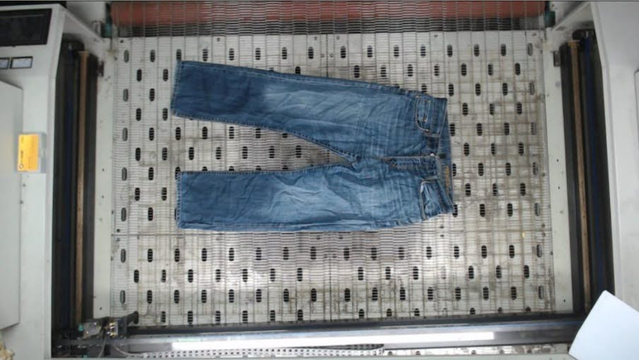
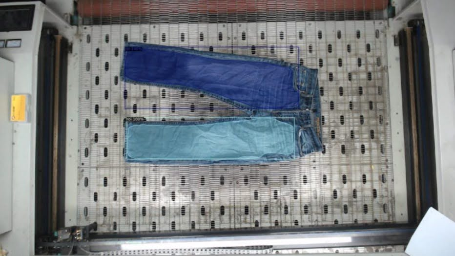
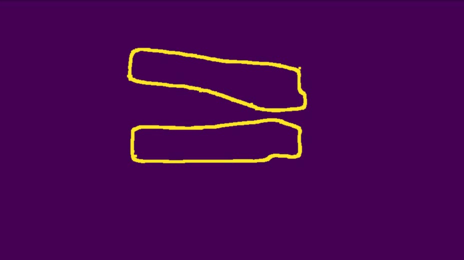

Problem Statement
Recycling denim and other cotton garments only works on the pure cotton. A pair of jeans is not one material: it carries a zip, rivets and buttons, polyester panels and labels, and — easy to overlook — the sewing thread holding it together, which is usually not cotton either. All of it has to come out before the cotton can go into its own recycling stream.
That separation used to be done by hand. Someone looks at each garment, decides which areas are usable cotton, and cuts them out — slow, tiring work whose consistency depends entirely on the person doing it, and a bottleneck in an otherwise automated recycling line.
Approach
We built a laser cutting machine that performs the separation itself, and the vision system that tells it where to cut. A camera above the bed sees the garment as it is laid down; everything after that is automatic, ending in cutting paths the machine can execute.
The core of it is a segmentation model trained on our own data. Off-the-shelf models have no notion of "the part of this garment that is pure cotton" — that judgement is specific to the material, the construction of the garment and what the recycler will accept, so the training data had to come from the line itself. The model returns the cotton-only regions as blobs; their boundaries, not the pixels, are what the laser needs.
From Frame to Cutting Path
The three stages are easiest to read as images. First the raw frame — two pairs of jeans on the bed, seams, zips and all:

Then the segmentation output. The filled regions are what the model considers recyclable cotton; the waistband, fly, zip and pocket hardware are deliberately left outside them:

Finally the part the machine actually consumes: each blob reduced to its boundary. These contours are converted to G-code and streamed to the cutter, which follows them to lift the cotton out of the garment.

What the System Delivers
- A cotton-only segmentation model. Trained on data collected from the line, so it learns the distinction that matters to the recycler rather than a generic garment/background split.
- Blobs instead of loose pixels. Predictions are resolved into discrete regions, which is what makes the output cuttable: a blob is a shape the laser can go around, a pixel mask is not.
- Boundaries as machine instructions. Edge detection over the blobs produces closed contours, and those contours are emitted as G-code — the output of the vision system is a program the cutter runs, with no operator in between.
- An automated version of a manual job. The same garment produces the same cuts every time, and the decision no longer depends on whoever is at the table.